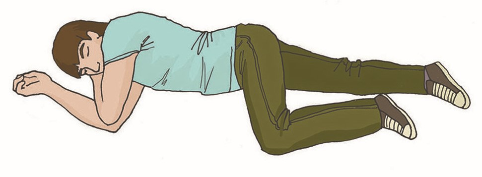

Устойчивое боковое положение
Устойчивое боковое положение (УБП) — положение, в которое помещается человек в случае отсутствия сознания при наличии дыхания с целью дождаться приезда бригады скорой медицинской помощи.
В этом положении у пострадавшего нет риска удушения из-за перекрытия дыхательного пути расслабленным языком или попадания в дыхательные пути физиологических жидкостей.
Для придания пострадавшему устойчивого бокового положения необходимо выполнить следующую последовательность действий:
- Расположите ближнюю руку пострадавшего под прямым углом к его телу.
- Дальнюю руку пострадавшего приложите тыльной стороной ладони к противоположной щеке, придерживая её своей рукой.
- После этого согните дальнюю от себя ногу пострадавшего в колене, поставите её с опорой на стопу. Надавите на колено этой ноги на себя (в указанном на рисунке направлении) и поверните пострадавшего.
- После поворота пострадавшего набок, слегка запрокиньте его голову для открытия дыхательных путей и подтяните ногу, лежащую сверху, ближе к животу.
В результате описанных выше действий пострадавший будет находиться в положении, изображённом на рисунке.
